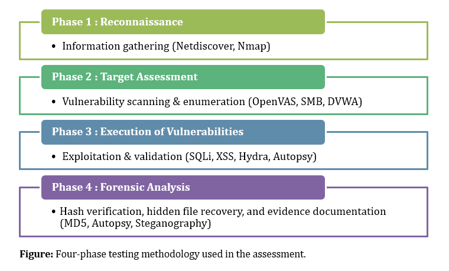
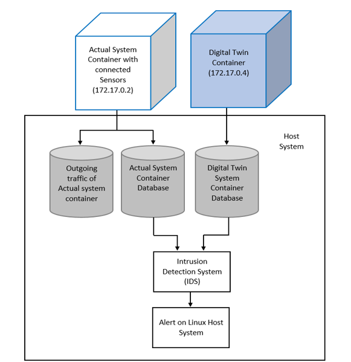

My Work
Cybersecurity Bootcamp Project
A full-scale Vulnerability Assessment, Penetration Testing (VAPT), and Forensic Investigation conducted during a 16-week Cybersecurity Bootcamp. The assessment uncovered 58 vulnerabilities (16 high-risk) and recovered 5 forensic artifacts from a simulated enterprise lab.
- Kali Linux
- Nmap
- Metasploit
- Hydra
- Greenbone (OpenVAS)
- DVWA
- Autopsy
- Python


Master Thesis — Digital Twin-based Intrusion Detection System (IDS)
Designed and implemented a Digital Twin-based Intrusion Detection System (IDS) during my Master’s thesis at Robert Bosch GmbH, enhancing real-time threat visibility and cyber resilience for Industry 4.0 environments using Docker and Python automation.
- Docker
- Python
- Shell Scripting
- Linux
- Network Monitoring
- Industrial IoT

Security & Privacy Specialist — Continental Automotive Technologies GmbH
Performed Threat Analysis and Risk Assessment (TARA) aligned with ISO/SAE 21434 and UN ECE R155, designed secure architectures, and coordinated risk mitigation for embedded automotive platforms.
- ANSYS Medini Analyze
- ISO/SAE 21434 & UN ECE R155 Compliance
- Threat Modeling & Risk Mitigation
- Security Architecture Design
- Stakeholder Collaboration & Documentation

Bilingual Assistant Application Developer — Fujitsu Consulting India
Built multi-channel UI features and mobile interfaces; translated Japanese technical documentation into performant, standards-compliant JavaScript and improved usability for enterprise clients.
- JavaScript / HTML / CSS
- UI & UX Optimization
- Japanese ↔ English Technical Translation
- Agile Development & Collaboration
- Performance Tuning & Testing

Trainee — NTT DATA
Completed professional Java development training focused on object-oriented programming and application design fundamentals, plus Japanese language training (JLPT N4) for cross-border collaboration.
- Java & Object-Oriented Programming
- Software Design Fundamentals
- Project Lifecycle Understanding
- Japanese Language (JLPT N4)
- Cross-Cultural Team Communication